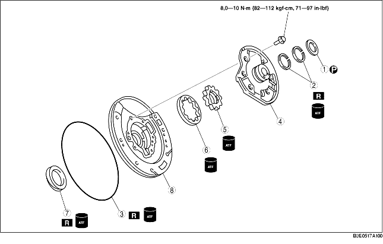

1. Effectuer la pré-inspection avant le démontage.
(voir la section Pré-inspection de la pompe à huile.)
2. Démonter selon l'ordre indiqué dans le tableau.
3. Remonter dans l'ordre inverse du démontage.

|
1
|
Rondelle de butée
|
|
2
|
Joints d'étanchéité
|
|
3
|
Joint torique
|
|
4
|
Couvercle de pompe à huile
(voir la section Note sur le démontage du couvercle de pompe à huile.)
|
|
5
|
Rotor intérieur
(voir la section Note sur le démontage du rotor intérieur et du rotor extérieur.)
|
|
6
|
Rotor extérieur
(voir la section Note sur le démontage du rotor intérieur et du rotor extérieur.)
|
|
7
|
Joint d'huile
|
|
8
|
Carter de pompe à huile
|
• Dévisser de façon égale les boulons de fixation selon le modèle illustré, et retirer le couvercle de pompe à huile du carter de pompe à huile.
• Marquer les rotors intérieur et extérieur sans les rayer ni les denteler, puis les retirer du carter de pompe à huile.
1. Appliquer de l'ATF sur le nouveau joint, et le monter sur le carter de pompe à huile à l'aide de l'outil SST.
2. Mesurer l'espace entre l'extrémité du carter de pompe à huile et les rotors intérieur et extérieur à quatre emplacement autour de leur circonférence.
3. Mesurer le jeu entre le rotor extérieur et le rotor intérieur.
4. Appliquer de l'ATF sur les rotors extérieur et intérieur.
5. Aligner les repères et monter les rotors extérieur et intérieur.
6. Reposer la bride de la pompe à huile.
7. Fixer le couvercle de pompe à huile sur le carter de pompe à huile.
8. Serrer les boulons régulièrement et progressivement dans l'ordre indiqué.
9. Appliquer l'ATF sur le nouveau joint torique, et le monter sur le carter de pompe à huile.
10. Appliquer l'ATF sur les nouveaux joints, et les monter sur le couvercle de pompe à huile.